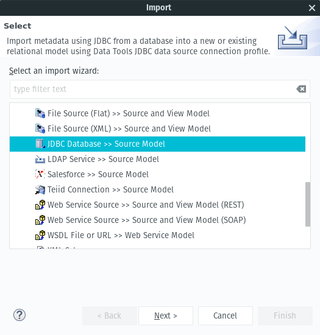
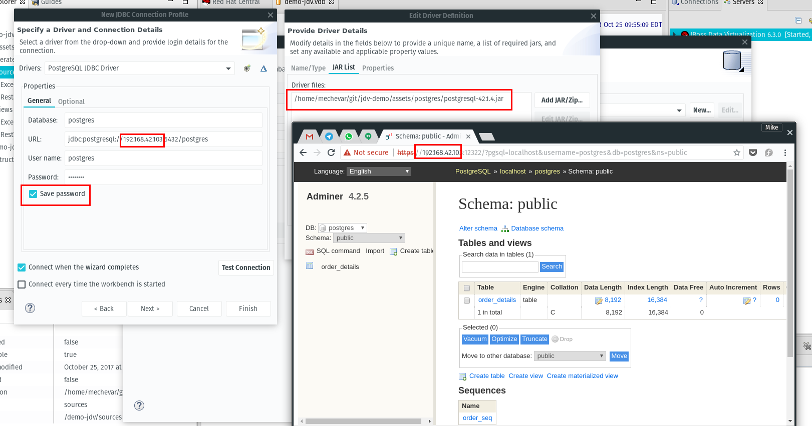
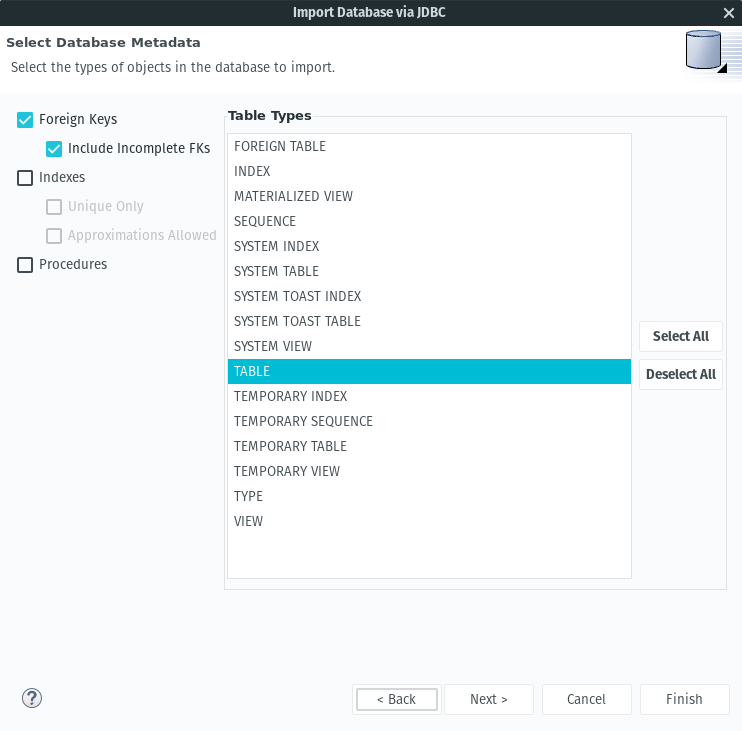
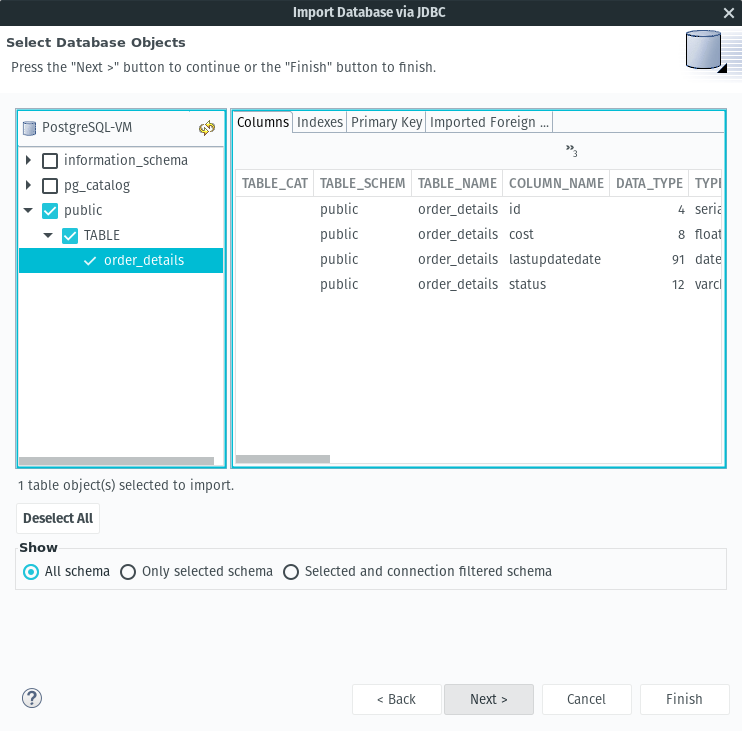
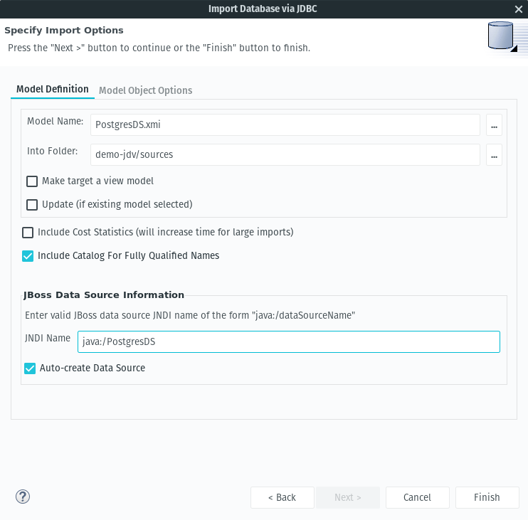
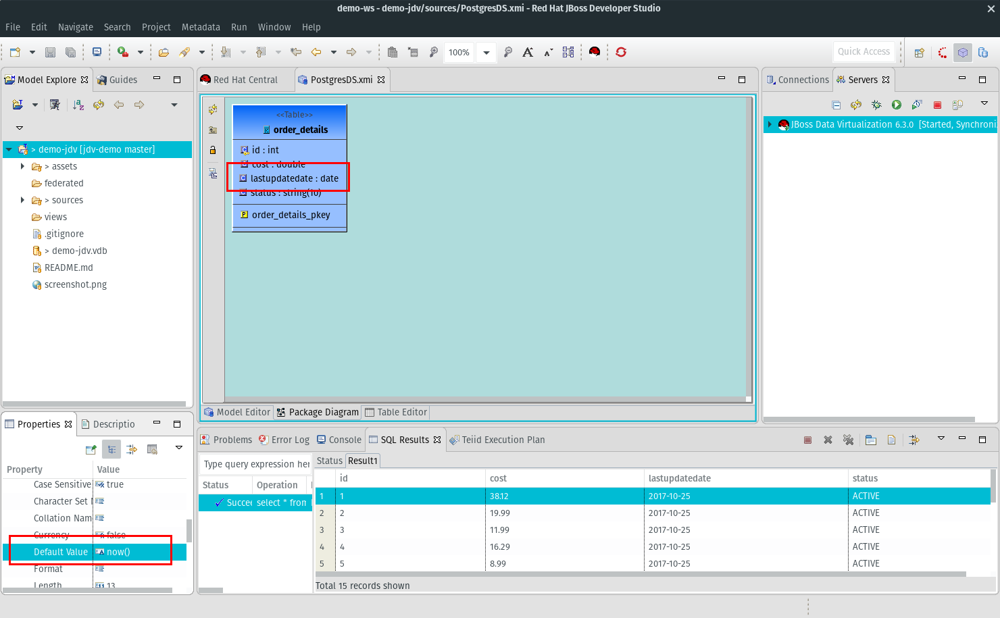
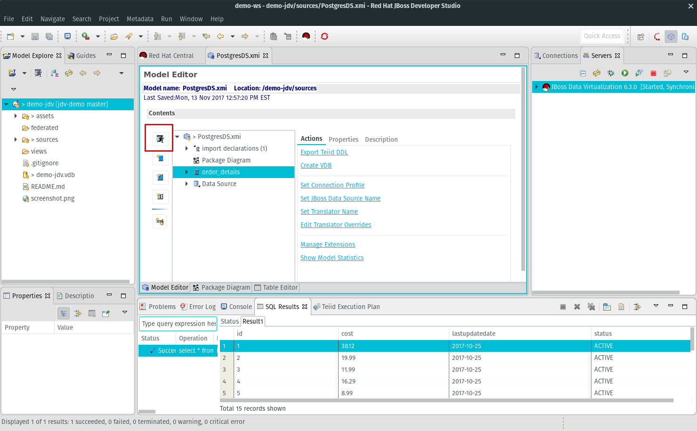
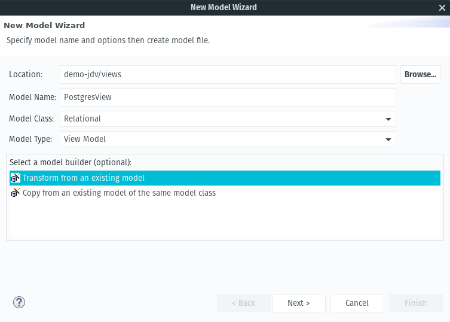

Under Connection Profile, select new
Select PostgreSQL as the Connection Profile Type, Next
In the next window, click the New Driver Definition icon
Under the Jar List tab, select Add JAR/Zip and then select jdv-demo/assets/postgres/postgresql-42.1.4.jar, then ok
In the New JDBC Connection Profile window make sure to use the IP address of your PostgreSQL instance and put the credentails for the postgres user and check Save Password.
Click Test Connection and verify you get a Ping Succeeded response before selecting Finish



Name your model PostgresDS.xmi
In folder demo-jdv/sources
JNDI Name java:/PostgresDS
Click Finish

We have to fix the default values for two properties.
Click on the Package Diagram tab and then click on lastupdatedate and then change the property Default Value in the lower left to now()
Click on status and then change the property Default Value in the lower left to 'ACTIVE' and then save the model

This is a common issue when importing tables that have existing contraints. The data preview would fail and you would need to check the server log for the error.

Lets now create a REST view on top of this base layer
file new Teiid Metadata Model
Location demo-jdv/views
Name PostgresView
Model Type View Model
Transform from an existing model, click next
In the next window select the existing model as PostgresDS, click Finish and save the view model
